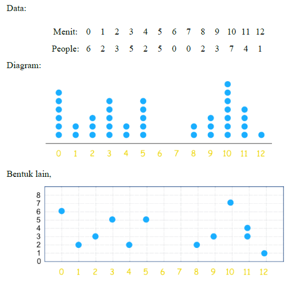
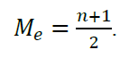
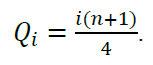

Dot plot adalah jenis tampilan grafis yang digunakan untuk membandingkan frekuensi dalam kategori atau kelompok. Dot plot berbentuk seperti diagram batang dengan titik-titik sebagai gambaran dari frekuensi data pada tiap kategori. Bentuk lain dari dot plot adalah seperti diagram kartesius dengan sumbu x adalah frekuensi dan sumbu y adalah kategori.
Ringkasan numerik digunakan untuk mengetahui kondisi pemusatan dan persebaran data kuantitatif. Ringkasan tersebut diperlukan agar data menjadi lebih sederhana, mengetahui gambaran data serta sifat penting dari data tersebut.
Contoh penggunaan diagram dotplot “Waktu yang dibutuhkan seseorang untuk sarapan”

Box Plot
Box plot (atau juga bisa disebut diagram whisker) adalah cara menampilkan distribusi data berdasarkan ringkasan numerik yaitu: nilai minimum, kuartil bawah, median, kuartil atas, dan nilai maksimum.
Box plot kita menggambarkan ringkasan numerik secara visual, memberikan gambaran pusat data, sebaran data, bentuk distribusi data dan dapat membandingkan antar data. Dengan membaca box plot, kita dapat mengetahui nilai minimum, nilai maksimum, Q1, Median, Q3, ada tidaknya nilai outlier (pencilan) dan nilai ekstrim (pencilan jauh), serta distribusi dari dari data pengamatan.
Contoh penggunaan diagram dotplot “Waktu yang dibutuhkan seseorang untuk sarapan”
Bagian-bagian Box Plot
Bagian utama kotak berbentuk persegi merupakan bidang menyajikan IQR, dimana 50% dari nilai data pengamatan terletak di sana. IQR menggambarkan ukuran penyebaran data. Semakin panjang bidang IQR menunjukkan data semakin menyebar.
Garis bawah kotak (LQ) = Q1, dimana 25% data pengamatan lebih kecil atau sama dengan Q1.
Garis tengah kotak = Q2 (median), dimana 50% data pengamatan lebih kecil atau sama dengan nilai ini.
Garis atas kotak (UQ) = Q3 (Kuartil ketiga) dimana 75% data pengamatan lebih kecil atau sama dengan nilai Q1.
Garis yang merupakan perpanjangan dari box (baik ke arah atas ataupun ke arah bawah) dinamakan dengan whiskers.
Whiskers bawah menunjukkan nilai yang lebih rendah dari kumpulan data yang berada dalam IQR.
Whiskers atas menunjukkan nilai yang lebih tinggi dari kumpulan data yang berada dalam IQR
Panjang whisker ≤ 1.5 x IQR. Garis whisker dimulai dari ujung kotak IQR, dan berakhir pada nilai data yang bukan dikategorikan sebagai outlier. Dengan demikian, nilai terbesar dan terkecil dari data pengamatan (tanpa termasuk outlier) masih merupakan bagian dari Boxplot yang terletak tepat di ujung garis tepi whiskers.
Panjang boxplot dapat digunakan untuk menggambarkan tingkat penyebaran atau keragaman data pengamatan,
Letak median dan panjang whisker menggambarkan tingkat kesimetrisannya.
Kelebihan Box Plot
Secara visual menggambarkan lokasi dari data
Menunjukkan sebaran data tersebut simetri atau tidak
Tidak seperti metode yang lain, box plot memperlihatkan outlier
Dapat cepat digunakan untuk membandingkan lebih dari satu distribusi data pada satu tampilan secara bersamaan.
Kelemahan Box Plot
Cenderung memperhatikan outlier, yang mungkin tidak diperlukan dalam suatu data.
Selain itu bentuk distribusi terpengaruh pula adanya outlier.
Cenderung menyembunyikan detail dari distribusi data.
Pembuatan Box Plot
Dalam pembuatan box plot, nilai yang kita perlukan antara lain :
Median adalah nilai yang terletak di tengah setelah data diurutkan. Untuk menentukan posisi nilai median suatu data tunggal dapat menggunakan rumus

Kuartil adalah nilai yang membagi data menjadi 4 bagian. Kuartil dinotasikan dengan Q. Rumus untuk menentukan kuartil untuk data tunggal adalah

Interquartile Range (IQR) adalah selisih Q1 dan Q3.
Nilai outlier atau pencilan adalah nilai data yang letaknya lebih dari 1.5 x panjang kotak (IQR), diukur dari UQ (atas kotak) atau LQ (bawah kotak).
Q3 + (1.5 x IQR) < outlier atas ≤ Q3 + (3 x IQR)
Q1 – (1.5 x IQR) > outlier bawah ≥ Q1 – (3 x IQR)
Nilai ekstrim atau pencilan jauh adalah nilai-nilai yang letaknya lebih dari 3 x panjang kotak (IQR), diukur dari UQ (atas kotak) atau LQ (bawah kotak).
Ekstrim bagian atas apabila nilainya berada di atas Q3 + (3 x IQR) dan
Ekstrim bagian bawah apabila nilainya lebih rendah dari Q1 – (3 x IQR)
Panjang whisker maksimal adalah 1,5 x IQR dari kotak dan digambarkan hingga nilai maksimum atau minimum data yang terletak diantara Q1-1,5 x IQR dan Q3+1,5xIQR.